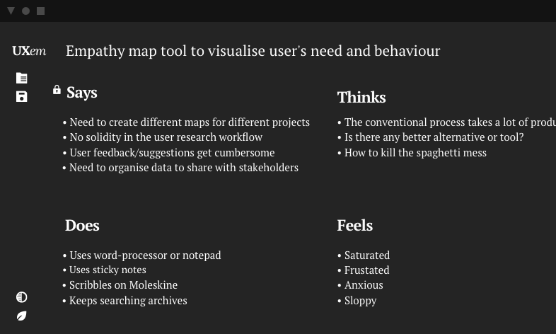
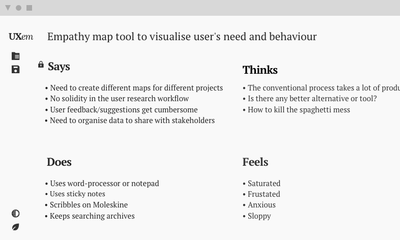
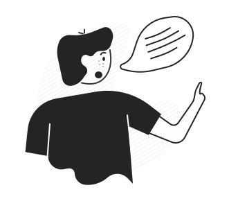
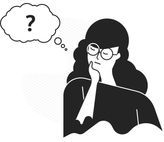
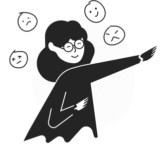

Empathy mapping tool for UX first designers - it's Free
Visualize user's need and behavior to
design a better product


Why Empathy maps are essential?
Empathy maps are created to visualize the user’s behavior and actual needs, which in return helps to make better product design-oriented decisions prioritizing the user’s need.
How empathy maps are created?
Set of one on one or group interviews with users are conducted to collect the unstructured insights and feelings.
How do empathy maps help to make
better products?
Empathy maps are used to understand what a user is saying,
thinking, hearing or doing about
their needs.
Says
What so ever a user says goes to the “Says” segment. It generally highlights the problem set and focuses upon what exactly a user is looking for.

Thinks
Thinks segment concludes what the user is thinking all the time while performing different actions in their journey.

Does
Does segment is used to jot down the observed user behavior while they were performing a set of different actions.
Feels
“Feels” segment collects the general human emotions like frustration or delight whichsoever is experienced by the interviewee.
